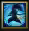
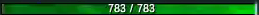
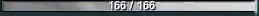

UI COMPONENTS / APPROVED SCOPE
原版实机 · 精简 UI 制作清单
18 个保留参考部件 · 按当前需求筛选 · 等级与扩展功能不制作
无等级R 就绪态状态仅保留被动无装备 / 金币无侧边功能 / 技能升级
01 / 目标组合示意

 W
W


组合图用于确认布局范围，尚未像素化重绘。视频中的 R 全程灰色，此处明确改用游戏现有彩色 R 图标作为就绪态参考，不修改游戏冷却与施法规则。头像与头顶信息已排除等级；状态区只留一个被动技能图标。
02 / 保留部件
头像核心 · 无等级
裁取头像核心，排除右下角等级徽章；外框后续单独绘制
63 × 57 · 实机 24s · (697, 941)被动图标
独立小型图标槽
29 × 31 · 实机 24s · (780, 941)Q 技能槽
图标与快捷键
40 × 44 · 实机 24s · (811, 941)W 技能槽
图标与快捷键
40 × 44 · 实机 24s · (852, 941)E 技能槽
图标与快捷键
40 × 44 · 实机 24s · (893, 941)R 就绪态
使用游戏现有彩色 R 图标，不是从实机视频提取的就绪帧
295 × 299 · 现有游戏素材 · 就绪态生命条
填充、数字与细边框
259 × 15 · 实机 24s · (779, 988)资源条
浅色资源条及数字
259 × 16 · 实机 24s · (779, 1003)召唤师技能双槽
D/F 槽位与快捷键
64 × 39 · 实机 24s · (975, 940)D 槽
单个召唤师技能
31 × 36 · 实机 24s · (977, 941)F 槽
单个召唤师技能
31 × 36 · 实机 24s · (1008, 941)小地图与外框
右下角方框地图及金属边框
321 × 321 · 实机 24s · (1583, 703)小地图内部
地图、单位与视野框的合成画面
303 × 301 · 实机 24s · (1594, 716)右上对局数据
团队数据、KDA、补刀与时间
336 × 31 · 实机 24s · (1568, 31)英雄头顶信息 · 无等级
保留名称、生命与资源，裁去左侧等级框
114 × 50 · 实机 24s · (768, 416)敌方小兵血条
窄条生命提示
67 × 11 · 实机 24s · (946, 211)游戏光标
指针及其下方场景背景
48 × 65 · 实机 24s · (846, 288)防御塔血条
从 10 秒补充建筑血条
263 × 37 · 实机 10s · (881, 48)